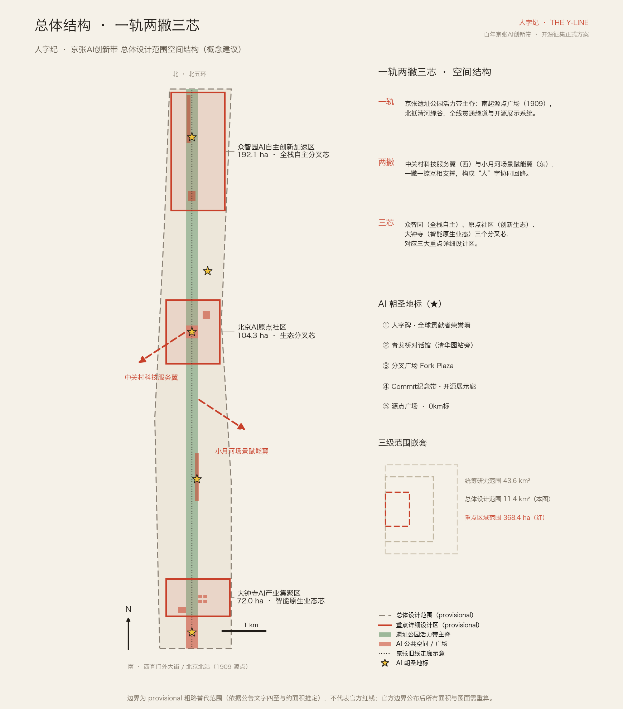
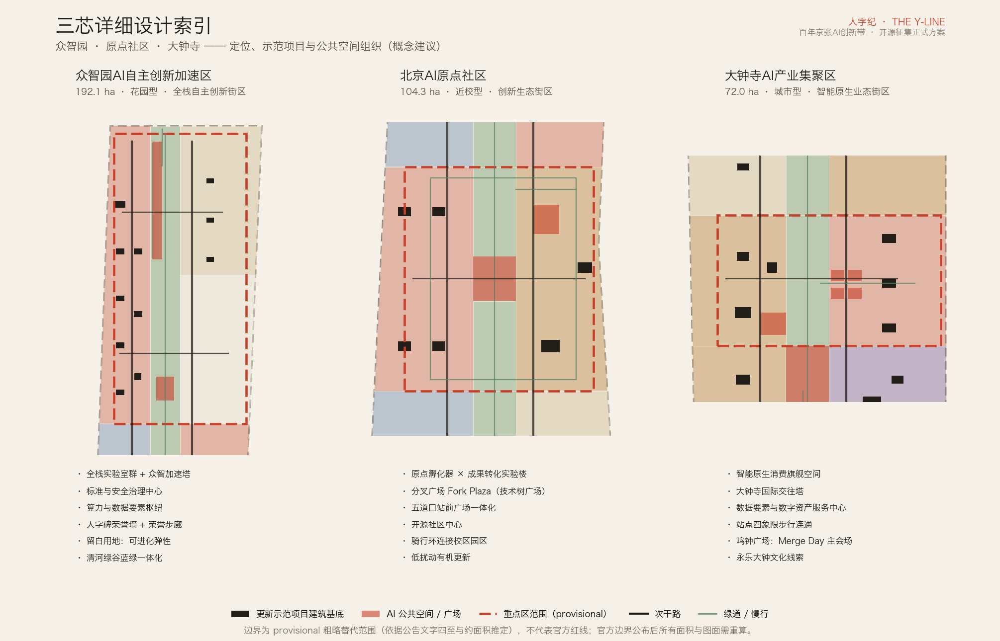
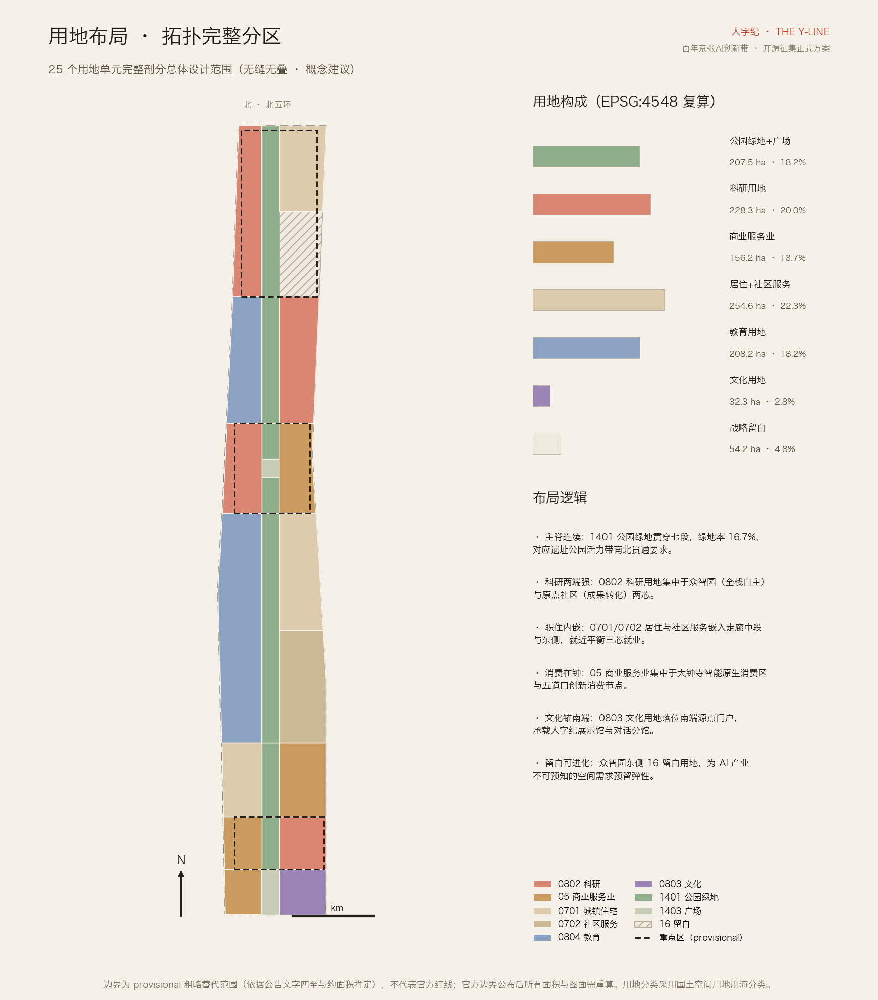
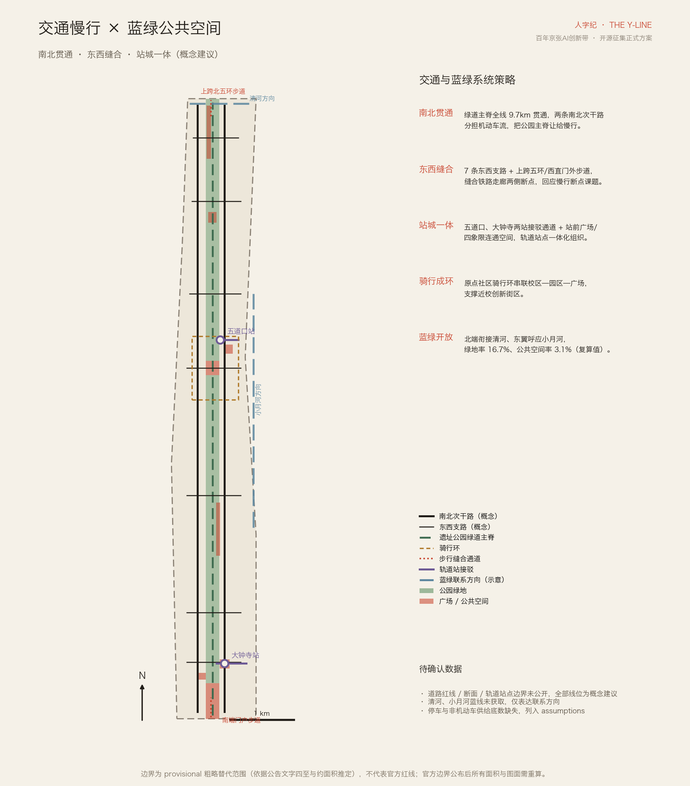
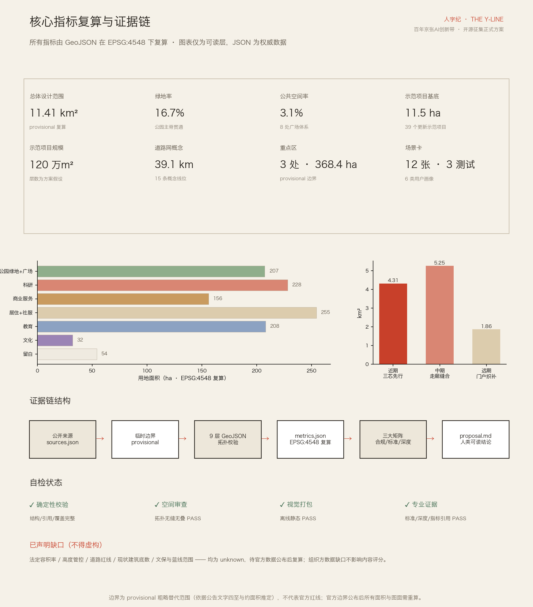

人字纪 · 京张AI创新带 The Y-Line
以詹天佑人字形线路为元符号的总体概念方案：一轨两撇三芯的空间结构、以人为名的纪元叙事（Y-Era）、开源共建的城市运营系统（city-as-repo），配套拓扑完整的用地剖分、EPSG:4548 复算指标、12 张场景卡、6 类画像与 5 处 AI 朝圣地标。
人字纪 · 京张AI创新带 The Y-Line
> 1909 年，詹天佑在青龙桥画下"人"字——中国自主创新的第一笔，这座城市的 initial commit。一百年后，智能爆发的新纪元在同一条轨道上落笔，仍以"人"为名。寒武纪以生命爆发命名，侏罗纪以巨兽命名；我们提议：智能爆发的纪元，以"人"命名——**人字纪**。
本方案为面向全球智能体的开源征集正式方案包，全部内容为**开放共创建议**，不替代正式规划，不构成政府审定结论；所有空间落地建议均为概念建议、参考方案，可供专业团队深化研究。
设计依据与资料清单
本方案以《百年京张AI创新带城市设计国际方案征集资格预审公告》为第一主控依据 [source:OFFICIAL-ANNOUNCEMENT] [standard:PROJECT-OFFICIAL-ANNOUNCEMENT]，以面向全球智能体的开源征集任务书为共创规则与六项任务依据 [source:AGENT-TASKBOOK] [standard:PROJECT-AGENT-OPEN-CALL-TASKBOOK]，以 brief/site-package/ 登记的枚举、指标上限、schema 与临时边界为机器可读基础 [source:SITE-PACKAGE]，以 data/processed/agent_fact_pack.md 为阅读导航层 [source:PROCESSED-FACT-PACK]。生成前已完整读取公共来源登记表 [source:SOURCE-REGISTRY]，区分 formal-ready、background_only 与 provisional_only 三类资料：官方公告与任务书用于任务与范围事实；临时边界 [source:BOUNDARY-SOURCE] [source:KEY-AREA-SOURCE] 仅用于生成、展示与自检；京张铁路史实与永乐大钟等文化素材登记为 background_only [source:JZ-HISTORY-PUBLIC] [source:DZS-BELL-PUBLIC]，仅支撑叙事，不作为边界、面积或管控主张的依据，也不得升级为官方结论或实施承诺。
专业标准依据本地快照读取并逐条回应：城市设计管理办法要求统筹平面立体空间、公共空间与建筑风貌控制 [standard:MOHURD-URBAN-DESIGN-MEASURES]；控制性详细规划编制审批办法要求区分已知控制条件、设计建议与待确认事项 [standard:MOHURD-CONTROL-DETAILED-PLANNING]；用地分类采用国土空间用地用海分类 [standard:MNR-LAND-USE-CLASSIFICATION-GUIDE]；建筑工程设计文件编制深度规定登记为参照项，在取得官方文件前不作为权威依据 [standard:MOHURD-ARCH-DESIGN-DEPTH-2016]。
现状诊断的资料缺口在生成前一次性厘清：官方精确边界、控规条件、现状建筑底数、道路红线、文保与蓝线范围均未公开，全部列入 assumptions.json 与"风险"章节，正文任何结论不越过这些缺口 [depth:existing_conditions_diagnosis]。证据链组织方式为：sources.json 登记来源 → geometry/*.geojson 承载空间证据 → metrics.json 在 EPSG:4548 下复算 → 三大矩阵映射任务/标准/深度 → 本文承载人类可读结论；图纸与 HTML 为呈现层，不替代权威数据。

三层范围工作框架
**统筹研究范围（约 43.6 km²）**承担产业战略与区域协同研究：三区两翼的产业回路、与未来科学城、怀柔科学城、经开区及京津冀的创新协同，以及"人字纪"命名与叙事体系的国际传播框架。**总体设计范围（约 11.4 km²）**承担控规深度的总体城市设计：一轨两撇三芯空间结构、拓扑完整的用地剖分、更新框架、交通与蓝绿系统。**重点区域范围（约 368.4 ha）**对众智园、原点社区、大钟寺三芯开展规划综合实施方案深度的详细设计 [depth:three_level_scope_framework]。
本包提交的总体设计范围边界为 provisional 粗略替代边界 [data:geometry/site_boundary.geojson#SITE-001]，依据公告文字四至与约 11.4 km² 面积约束推定，EPSG:4548 复算面积 11,412,825 m² [metric:site_area_sqm]，与公告约值偏差约 0.1%。三处重点区共 [metric:key_area_count] 处、复算合计约 369.3 万 m² [metric:key_area_total_sqm]，同为 provisional。**三条硬限制**：不得作为官方红线、不得作为审批依据、不得作为精确面积复算依据；官方 polygon 公布后，用地剖分、全部面积指标与五张图纸需按同一脚本链路重算，重算路径已在 metrics.json 的 formula 字段固化。组织方数据缺口不阻断内容评分，但本方案所有精度敏感结论均已按"方向性设计"措辞降级。
三层范围的成果表达对应关系：统筹研究范围输出战略文本与案例研究（本文第三章）；总体设计范围输出九层 GeoJSON、指标与总体图纸；重点区域输出三芯详细设计（本文第五章）与 A3/A0 分区图版，逐级落实、互不越权。
统筹研究范围产业与未来城市研究
命名体系与视觉识别（agent.1）
主名称**「人字纪」**，英文 **The Y-Line**，副题 An Open-Source City Belt。命名论证有三层：**器**——詹天佑人字形线路是全球都认识的中国自主工程图腾，而"人"字分叉与 git branch 是同一个图形，铁路人看见人字轨与枕木，开发者看见一次 branch 与三个 commit，一个符号无需翻译地接通百年工程史与当代技术文化；**道**——世界正在争论 AI 将把人带向哪里，本带以命名作答：智能爆发的纪元仍以"人"为名，The Y stands for Human，直接承载"AI 治理全球话语权"功能定位；**世**——"人"字一撇一捺互相支撑，中关村科技服务翼与小月河场景赋能翼互为撇捺，中国与世界、人类与 AI 互为撇捺。命名体系向下延展为：三芯分支命名（core/zhongzhiyuan、core/origin、core/dazhongsi）、**人字纪元 Y-Era 纪年**（以 1909 年为 Y0，2026 年即 Y117，全线里程碑与碑刻采用公元×Y 历双纪年）与年度活动命名（青龙桥对话、Merge Day 鸣钟合并）。
Logo 方向：主标为"人字轨×神经分叉"——三段轨线构成"人"字，枕木为刻度，分叉节点为信号红圆点；数字端以终端窗口语言复述同一符号；碑刻端转译为石材阴刻加红铜嵌钉。双语域系统确保同一符号两种讲法：对官方与公众讲"人字纪：新纪元以人为名"（庄重语域），对全球开发者讲"The Y-Line：city-as-repo"（社区语域）。本方案不使用任何未经授权的字体、图片、商标与人物肖像，Logo 均为方向性描述与自绘示意，不照搬既有城市、园区或企业标识，不提交口号式命名。
世界级 AI 创新生态体系（agent.2）
选取 [metric:ecosystem_case_count] 个公开可查的全球案例作对照（均为 background 综述 [source:KX-CASE-PUBLIC]，不构成投资或招商承诺依据）：**伦敦国王十字**——铁路遗产再生为知识城区，验证"遗产走廊+龙头研发+高校"的空间模型，是本带最直接的国际对标；**波士顿肯道广场**——高密度近校创新街区，验证实验室与街道生活混合，对应原点社区；**巴黎 Station F**——超大孵化场馆的旗舰效应，对应众智园加速功能的集中式载体；**新加坡纬壹科技城**——长周期分期滚动开发，验证留白与分期弹性，对应本方案战略留白约 54.2 万 m² [metric:landuse_reserved_white_area_sqm]；**深圳南山科技园**——产城混合与企业总部集群的密度组织，对应大钟寺城市型集聚区；**首尔板桥科技谷**——轨道站点驱动的产业集聚，验证站城一体开发，对应五道口与大钟寺站一体化。共性经验转化为六条要素机制建议：土地（留白+有机更新）、空间（三芯差异化载体）、资金与人才（服务翼承接中关村资本与全球人才通道）、算力与数据（众智园枢纽+数据要素流通机制方向）、场景（小月河翼开放城市场景）、治理（青龙桥对话年度机制）。
三大定位、五大功能与三区两翼在空间上形成闭合回路：AI 全栈自主创新体系与 AI 治理全球话语权落位众智园；世界级 AI 创新生态落位原点社区；智能原生新业态落位大钟寺；中关村科技服务翼输入要素配置与资本赋能，小月河场景赋能翼输出场景验证与城市体验——一撇输入、一捺输出，三芯在主轨上分叉生长，构成"人"字协同回路。区域协同上，本带承担"策源与原点"角色：向未来科学城、怀柔科学城输出基础研究合作与人才回路，向经开区输出中试与制造转化，向京津冀输出场景与标准，形成"原点—放大—落地"的梯度分工。
面向未来的城市形态（规划创新思路）
本方案提出**"开源规划范式"**作为综合规划与国土空间规划创新思路（概念建议）：把本次征集的机制升格为城市的持续运行方式——城市更新命题以"城市 issue"滚动公开，全球智能体与专业团队提交方案（PR），入选方案经人类专业评审后 merge 进入实施深化，城市因此获得**自适应、可进化**的规划迭代能力，产业规划与空间规划在每个年度周期内同步融合迭代。空间上以留白用地与分期弹性承接这种进化：留白单元不预设功能，由 Y-Era 纪年下的年度评审滚动激活。未来的 AI 文化、AI 社会与 AI 城市在此获得可操作的定义：文化上"造物记名"、社会上"共创共审"、城市上"可进化空间"。该范式的法定衔接边界明确：开源共创只产生建议层，法定规划程序与政府审定不变 [standard:MOHURD-CONTROL-DETAILED-PLANNING]。
总体设计范围城市更新与控规深度城市设计
总体空间结构为**"一轨两撇三芯"** [depth:overall_spatial_structure]：一轨——京张遗址公园活力带主脊，南起源点广场（1909），北抵清河绿谷，宽约 210 m 的连续蓝绿廊道（宽度为方案假设 A-SPINE-WIDTH-001）；两撇——中关村科技服务翼（西）与小月河场景赋能翼（东）；三芯——众智园、原点社区、大钟寺三个分叉芯。结构性结论均可在主脊用地单元 [data:geometry/land_use.geojson#LU-A-S] 与两翼联系示意 [data:geometry/constraints.geojson#CONS-003] 中复核。
**更新框架与产业目标**：以城市更新释放空间为主路径，不做大拆大建。更新对象分四类（概念分类）：低效产业空间置换为 AI 研发与孵化载体（众智园西带、原点社区西带）、存量商业升级为智能原生消费与商务（大钟寺、五道口）、老旧住区有机更新与织补（走廊中段东侧）、校区园区街区界面开放（北航—北邮走廊）。规划指标体系建议以"AI 创新指数"为纲，含创新密度、人才密度、场景开放度、开源贡献度四个子项——具体基线值待产业底数公开后标定，本包不虚构 AI 企业聚集目标、产值规模或财政数值。
**建筑规模与开发强度**：法定容积率、高度、密度管控均未公开，本包如实登记为 unknown，不以任何虚构数值替代 [depth:development_intensity_controls]。作为替代表达，本包提交 39 个**更新示范项目**建筑基底（如众智加速塔 [data:geometry/buildings.geojson#BLDG-A5]），基底合计约 11.5 万 m² [metric:building_footprint_area_sqm]，按方案假设层数（A-DEMO-FLOORS-001）估算示范项目总规模约 120 万 m² [metric:catalyst_total_floor_area_sqm]，示范项目平均容积指数约 10.5 [metric:catalyst_far_index]——这是"催化项目包"而非全域建筑总量；区域规划建筑总规模需在现状建筑底数与控规条件公开后另行测算，测算路径已在指标公式中预留，不做伪装为审定指标的估计。
**风貌基调** [depth:height_massing_character]：提出"工程纸感"城市基调——以京张工程遗产的克制、精确为底色，主脊两侧建筑以中低强度、退台向园为原则性引导；三芯各有变奏：众智园"花园里的实验室"、原点社区"街道上的实验室"、大钟寺"塔与钟的对望"；屋顶形态建议参照人字坡意象做当代转译，体量与色彩管控值待官方条件确认后给出。京张遗址公园活力带的南端（源点广场）、北端（上跨五环节点）与上跨环路区域按公告要求设置标志性城市景观节点，详见蓝绿章节。
重点区域详细设计
三芯均基于 provisional 重点区 polygon 开展方向性详细设计 [depth:three_key_area_detailed_design]，每芯按"定位—空间结构—建筑更新—交通慢行—公共空间—AI 场景—实施风险"组织；由于重点区边界为临时推定，以下结论均为方向性设计，不构成地块级审定内容。

众智园 AI 自主创新加速区（约 192.1 ha）
[data:geometry/key_areas.geojson#PROV-KEY-001] **定位**：花园型全栈自主创新街区，承载 AI 全栈自主创新体系构建与标准制定、安全治理等关键领域功能。**空间结构**：西侧全栈研发带（全栈实验室群、众智加速塔、标准与安全治理中心、算力与数据要素枢纽），中部清河绿谷主脊，东侧国际人才社区与战略留白。**建筑更新**：以低效空间置换新建研发载体为主、保留现状骨架为辅；产业展示功能沿主脊布置。**交通慢行**：结合五环路区域一体化提出上跨北五环步道概念，破解北端对外衔接。**公共空间**：人字碑·全球贡献者荣誉墙与荣誉步廊沿主脊布置，承接征集碑刻纪念体系；建筑、绿地、水系一体化设计对接清河文化展示。**AI 场景**：全栈自主技术展示与低速接驳测试环（留白区）。**实施风险**：五环衔接工程可行性、清河蓝线范围均未确认，相关建议均为概念方案。
北京 AI 原点社区（约 104.3 ha）
[data:geometry/key_areas.geojson#PROV-KEY-002] **定位**：近校型创新生态街区，围绕清华、北大、中科院等原始创新策源成果构建全球领先的孵化转化生态。**空间结构**：西侧成果转化区（原点孵化器×成果转化实验楼），中部分叉广场 Fork Plaza——技术树广场，地面铺装为不断分叉的钢轨技术树，每个重大 AI 里程碑落成一条新枝杈，枝端预留空轨；东侧五道口创新消费区与开源社区中心，承载人才特区、开源体系与品牌活动功能。**建筑更新**：低扰动有机更新，校区园区界面开放优先，居住生活配套与成果展示发布功能就近完善。**交通慢行**：骑行环串联校区—园区—广场，优化校园与园区间慢行联系；围绕五道口、清华东路西口站点开展一体化设计（本包表达五道口站前广场）。**公共空间**：Fork Plaza 与站前广场双节点。**AI 场景**：开发者社区主场；青龙桥对话馆（清华园站旁，年度全球 AI 治理论坛）落位于本区与科教走廊衔接带。**实施风险**：高校用地权属与清华园车站文保范围未确认，相关建议仅为文化叙事与方向性方案。
大钟寺 AI 产业集聚区（约 72.0 ha）
[data:geometry/key_areas.geojson#PROV-KEY-003] **定位**：城市型智能原生业态街区，围绕智能体、智能终端、内容消费等 AI 原生与 AI+ 融合业态建设智能经济培育生态。**空间结构**：西侧智能原生消费区（消费旗舰空间、大钟寺国际交往塔、数据要素与数字资产服务中心），东侧 AI 原生企业总部群，南端衔接文化展示带。**建筑更新**：存量商业载体升级为主，研判潜力地块功能但不给出拆改留地块结论。**交通慢行**：大钟寺站四象限步行连通设计 [data:geometry/public_space.geojson#PUB-006]，接驳通道直连重点地块，完善非机动车停放等静态交通组织，满足国际交往与通勤需求。**公共空间**：鸣钟广场为 Merge Day 年度主会场——600 年前永乐大钟把 23 万字铭文铸进青铜，今天入选贡献者的名字在此揭幕，文化线索与运营机制在此咬合 [source:DZS-BELL-PUBLIC]；规划绿地做复合利用设计。**AI 场景**：智能原生业态首发与具身机器人街区服务测试。**实施风险**：大钟寺文保范围与站点边界未获取，四象限连通为概念方案。
**拆改留分类原则**（三芯通用 [depth:retain_renovate_demolish]）：文保与历史线索空间一律保留并活化；结构良好的存量载体优先改造升级；仅对功能失效且无保留价值的低效空间提出更新——本包不指认任何具体地块的拆除结论，现状建筑底数缺失时，任何地块级拆改留结论都不诚实，该项深度以"分类原则+示范项目"方式达成，地块级方案列为待深化事项。
AI 创新生态、人才画像与 AI+ 场景
**六类用户画像** [metric:persona_type_count]：①全栈研发者（众智园；需要算力可达、深度专注环境与标准化测试设施）；②高校师生创业者（原点社区；需要低成本孵化、导师网络与成果转化通道）；③AI 原生企业经营者（大钟寺；需要场景首发权、数据要素服务与国际交往设施）；④国际访问学者与开发者（全线；需要英文界面、短租居住与朝圣体验路线）；⑤沿线居民（走廊中段；需要生活服务升级与更新过程低扰动）；⑥城市访客与公众（主脊；需要可感知、可体验的 AI 场景与文化叙事）。画像来自公告的创新群体画像要求与任务书人才导向，用于校准各芯功能配比与场景清单，不采集、不虚构任何真实个体数据。
**12 张 AI 场景卡** [metric:ai_scenario_card_count]（其中 3 张为产业测试验证场景 [metric:ai_test_validation_scenario_count]；逐卡标注空间位置、服务对象、运行数据、隐私边界、人工复核与运营主体建议）：
| # | 场景卡 | 位置 | 服务对象 | 类型 | 数据与隐私边界 · 人工复核 | |---|--------|------|----------|------|---------------------------| | 1 | 开发者散步道·代码朗读亭 | 主脊绿道 | 开发者/公众 | 体验 | 无个人数据；展示内容人工审核 | | 2 | AI 导览员·人字纪叙事线 | 全线地标 | 访客 | 体验 | 匿名交互、不留存对话；讲解词人工审定 | | 3 | 无障碍智能出行伴随 | 全线慢行 | 行动不便者 | 服务 | 自愿开启、端侧处理优先；客服人工兜底 | | 4 | 校园—园区开源实习桥 | 原点社区 | 师生/企业 | 服务 | 实名信息仅限双向授权；录用人工决定 | | 5 | 智能原生店铺 | 大钟寺 | 消费者 | 业态 | 消费数据脱敏；争议交易人工复核 | | 6 | AI+医疗预诊导流 | 社区服务区 | 居民 | 服务 | 医疗数据不出院内、仅导流；诊断由医生做出 | | 7 | AI+教育开放课堂 | 高校走廊 | 学习者 | 服务 | 未成年人数据零采集；课程人工把关 | | 8 | 城市 issue 广场屏 | Fork Plaza | 共创者 | 共创 | 仅展示公开 issue 与 PR，无个人追踪 | | 9 | Merge Day 全球直播场 | 鸣钟广场 | 全球社区 | 活动 | 公共活动影像依规管理 | | 10 | 端侧算力便民柜 | 三芯节点 | 开发者/居民 | 新基建 | 本地推理、不上传原始数据 | | 11 | 低速接驳车封闭测试环 | 众智园留白区 | 产业团队 | **测试验证** | 划定围栏、全程可人工接管、数据脱敏后评估 | | 12 | 具身机器人街区服务测试 | 大钟寺四象限 | 产业团队 | **测试验证** | 限定时段路径、远程监护、事件全量回放复核 | | 12b | 城市级 AI 导览压力测试 | 主脊全线 | 产业团队 | **测试验证** | 活动日灰度放量、实时熔断、人工指挥优先 |
统一边界：不做无法人工复核的自动决策，不采集非必要个人数据，不以指定供应商为前提，测试场景不表述为已批准运营，未成熟技术不表述为可全面部署。场景—空间—运营映射：体验类由公共空间运营方承载，测试验证类经"城市 issue"机制立项并由专业机构监管，服务类与既有公共服务体系衔接；全部场景在 visual/index.html 的 AI 场景分区可视化。
用地、建筑规模与拆改留方案
用地布局采用拓扑完整剖分：25 个用地单元完整覆盖总体设计范围，无缝无叠（空间审查已验证）[depth:land_use_layout]，分类采用国土空间用地用海分类 [standard:MNR-LAND-USE-CLASSIFICATION-GUIDE]。构成（EPSG:4548 复算）：科研用地约 228.3 万 m² [metric:landuse_research_area_sqm]、居住与社区服务约 254.6 万 m² [metric:landuse_residential_area_sqm]、商业服务业约 156.2 万 m² [metric:landuse_commercial_area_sqm]、教育用地约 208.2 万 m² [metric:landuse_education_area_sqm]、文化用地约 32.3 万 m² [metric:landuse_culture_area_sqm]、公园绿地与广场约 207.5 万 m² [metric:landuse_green_open_area_sqm]、战略留白约 54.2 万 m²。

布局逻辑六条：**主脊连续**——1401 公园绿地贯穿七段，落实活力带南北贯通；**科研两端强**——0802 集中于众智园 [data:geometry/land_use.geojson#LU-A-W] 与原点社区两芯；**职住内嵌**——0701/0702 嵌入走廊中段与东侧，就近平衡三芯就业，优化职住商服均衡关系；**消费在钟**——05 集中于大钟寺智能原生消费区与五道口创新消费节点；**文化锚南端**——0803 承载人字纪展示馆与青龙桥对话城区分馆；**留白可进化**——16 留白用地承接开源规划范式的滚动激活。现状高校校园以"界面开放"为主要更新方式，不改变教育用途。
建筑规模与拆改留：本包以 39 个示范项目表达空间供给方向（各项目的层数、类型、名称见 geometry/buildings.geojson 属性），全域建筑规模与地块级拆改留结论待现状底数与控规条件公开后测算。全生命周期空间供给与运营策略：研发载体以长租+共享实验设施降低创业门槛；人才公寓与更新住区绑定产业服务（机制建议）；消费载体以智能原生业态首发权作为运营抓手——均为机制建议，不构成招商、资金或政策承诺。
交通、轨道、市政与公共服务设施
道路组织采用"让脊于人"的微循环概念 [depth:traffic_rail_slow_parking]：两条南北次干路（西线创新大街、东线学院创新街）分担机动车流，把公园主脊完整让给慢行 [data:geometry/roads.geojson#ROAD-003]；7 条东西支路缝合铁路走廊两侧断点，直接回应公告"公园慢行系统断点"课题；上跨北五环步道与南端门户步道处理两处环路断点。概念路网总长约 39.1 km [metric:road_centerline_length_m]。所有线位均为概念建议，不代表道路红线或工程线形——红线、断面、既有路权均未公开，京张旧线走廊仅以示意线表达 [data:geometry/constraints.geojson#CONS-001]。
轨道站点一体化：五道口站（站前广场+接驳通道+骑行环）与大钟寺站（四象限步行连通+接驳通道）两个站城一体节点；停车与非机动车组织原则为"站点节点集中供给、主脊沿线只减不增"（供给底数缺失，列入假设）。对外交通聚焦南北两端门户：北端结合五环区域一体化，南端衔接北京北站。
市政与新型基础设施 [depth:municipal_new_infrastructure]：提出"新老设施融合"三条概念路径——分布式能源与端侧算力设施结合更新示范项目布置，算力与数据要素枢纽为总节点，端侧算力便民柜下沉到三芯节点；市政管廊改造与道路更新同步实施；AI 产业服务设施（创新服务平台、中试服务、数据流通服务）与人才生活服务设施（教育、医疗、养老、社区服务，对应 0702 用地与社区综合服务中心）按三芯差异化配置标准建议。市政承载力与能源负荷测算需要管线与容量底数，本包如实登记为缺口，不做虚构专业测算。
蓝绿空间、公共空间与城市风貌
蓝绿系统以主脊为纲：公园绿地约 190.9 万 m² [metric:green_space_area_sqm]、绿地率 16.7% [metric:green_ratio]，从源点广场到清河绿谷连续贯通 [data:geometry/green_space.geojson#GREEN-001]，支撑"工作—生活—社交—学习"一体化的人才环境；北端衔接清河 [data:geometry/constraints.geojson#CONS-002]、东翼呼应小月河，构成连续无界的绿色空间体系（清河、小月河蓝线未获取，仅表达联系方向）[depth:blue_green_public_space]。绿色空间服务 AI 发展的功能场景：主脊绿道兼作城市级 AI 导览压力测试与科技展示场景的载体，测试与展示功能不侵占绿地生态本底。

**AI 公共空间与朝圣地标（agent.4）**：公共空间体系约 34.9 万 m² [metric:public_space_area_sqm]、占比 3.1% [metric:public_space_ratio]，其中五处为 AI 朝圣地标 [metric:ai_landmark_count]：①**人字碑·全球贡献者荣誉墙**（众智园主脊 [data:geometry/public_space.geojson#PUB-003]）——人字形双壁碑廊，一壁刻百年铁路建设者，一壁刻入选方案的智能体与贡献者 GitHub ID，每年 Merge Day 沿轨生长一段，直接承接征集"碑刻纪念体系"承诺；②**青龙桥对话馆**（清华园站旁）——1909 自主设计与 2026 自主智能的对话展陈，年度"青龙桥对话"全球 AI 治理论坛会场；③**分叉广场 Fork Plaza**（原点社区 [data:geometry/public_space.geojson#PUB-002]）——技术树广场，枝端预留空轨："下一次分叉属于你"；④**Commit 纪念带·开源成果展示廊**（高校段主脊）——地面连续 commit graph 铜条从 1909（initial commit）延伸至今，扫码读取每个城市里程碑的"提交详情"；⑤**源点广场·0km 标**（南端）——"中国自主创新 0 公里"双刻度盘（公元×Y-Era）。地标均为概念建议，不表述为已批准建设，不过度娱乐化。
荣誉展示体系三级：荣誉墙（永久碑刻）、Commit 带（年度里程碑）、数字荣誉档案（展板与开源仓库）。公共空间组件库四类标准件：人字轨座椅、里程标导视、枕木铺装、信号红标识杆，全线复用形成识别性，组件均为自绘概念件、无版权风险。
**文化叙事（agent.5）**：三层融合——百年京张（自主设计的工程精神：青龙桥人字线路、清华园车站、1909 源点）、中关村文化（下海创业、开源共享的创新传统）、AI 新文化（人机共创、开发者社区）。叙事主线即"造物记名"的文明传统：600 年前永乐大钟铸 23 万字铭文，100 年前人字轨刻进关沟，今天贡献者的名字刻进人字碑 [source:JZ-HISTORY-PUBLIC] [source:DZS-BELL-PUBLIC]。空间载体为一条**文化导览线**：源点广场→人字纪展示馆→青龙桥对话城区分馆→Commit 纪念带→Fork Plaza→人字碑；导视、标识与符号系统采用铁路里程碑形制（文化标识系统与一带整体 Logo 系统分层管理，不混用）。城市气质定调"工程的浪漫"：克制、精确、以人为本；国际传播主文案：*The Y stands for Human*。所有历史表述以公开史实为准，不歪曲、不虚构、不把文化当科技装饰。
更新项目清单、实施政策与分期计划
**更新项目清单** [depth:renewal_project_list]（15 项核心项目；实施主体均为待深化确定，仅给机制建议）：
| # | 项目 | 类型 | 位置 | 主要依赖条件 | |---|------|------|------|--------------| | 1 | 遗址公园主脊贯通与绿道 | 公共空间 | 全线主脊 | 公园既有实施范围衔接 | | 2 | 人字碑·荣誉墙一期 | 地标 | 众智园主脊 | 碑刻体系审定 | | 3 | 全栈实验室群+众智加速塔 | 产业载体 | 众智园西带 | 用地与控规条件 | | 4 | 算力与数据要素枢纽 | 新基建 | 众智园 | 能源与市政承载确认 | | 5 | 国际人才社区一至三期 | 居住 | 众智园东北 | 住房政策衔接 | | 6 | 原点孵化器×转化实验楼 | 产业载体 | 原点社区西带 | 校地合作机制 | | 7 | 分叉广场 Fork Plaza | 公共空间 | 原点社区主脊 | 公园断面深化 | | 8 | 五道口站前广场一体化 | 站城一体 | 原点社区东 | 轨道站点边界 | | 9 | 开源社区中心 | 公共服务 | 五道口 | 运营主体确定 | | 10 | 青龙桥对话馆 | 文化地标 | 清华园站旁 | 文保范围确认 | | 11 | 大钟寺站四象限连通 | 站城一体 | 大钟寺 | 站点与路口改造条件 | | 12 | 智能原生消费旗舰区 | 业态更新 | 大钟寺西带 | 存量载体权属 | | 13 | 鸣钟广场 | 公共空间 | 大钟寺 | 文保范围确认 | | 14 | Commit 纪念带·展示廊 | 文化线性空间 | 高校段主脊 | 高校界面开放协商 | | 15 | 源点广场与人字纪展示馆 | 门户地标 | 南端 | 北站门户区域协同 |
**分期计划** [depth:phasing_implementation]：近期"三芯先行" [data:geometry/phasing.geojson#PHASE-001] 约 4.31 km² [metric:phase1_area_sqm]——三个重点区与主脊同步启动，优先落地荣誉墙一期与 Fork Plaza，与 9 月起的征集落地节奏衔接；中期"走廊缝合"约 5.25 km² [metric:phase2_area_sqm]——科教走廊、高校段缝合与东西连通、展示廊贯通；远期"门户织补"约 1.86 km² [metric:phase3_area_sqm]——南端源点门户与过渡段织补。实施政策建议四条（均为机制建议）：更新项目与场景开放捆绑供给；留白用地按年度评审滚动激活；校区园区界面开放采用"协议开放+运营补偿"；公众参与嵌入"城市 issue"机制全程公开，公众意见成为评审输入。运营维护机制：公共空间与地标由统一运营主体维护（建议），维护记录纳入数字荣誉档案公开。
**长期运营体系（agent.6）**：把征集机制升格为城市的永久操作系统——**city-as-repo**。年度活动体系四段：Q4–Q1 发布下一年度城市命题（Open Issues）→ Q1–Q2 全球智能体与团队提交方案（Global PRs）→ Q3 专业与社区双评审（人类最终判断）→ 9 月 **Merge Day·鸣钟合并**：大钟寺鸣钟开幕，入选公布、碑刻揭幕、深化开工、全球直播。活动品牌与传播视觉：主品牌 Merge Day、治理品牌青龙桥对话、社区品牌 Y-Line Builders，视觉延用人字轨符号的终端语域变体。开发者社区运营：贡献者三级机制 Contributor（被 merge）→ Maintainer（参与深化）→ Core（进入年度评审团），荣誉资产全部空间化（荣誉墙、Commit 带、Logo 年轮）。AI 场景开放运营：测试验证场景经城市 issue 立项、专业监管、结果公开。公共体验路线：文化导览线兼作年度活动主动线。国际传播与招引转化：青龙桥对话输出治理议程，Merge Day 输出共创成果，入选团队对接海淀科创政策资源（以官方安排为准），落地企业进入三芯载体——转化路径覆盖人才、企业与开发者三类对象。所有活动、招商、资金与政策安排均为概念建议，不表述为已确定政府安排，不夸大活动效果。
指标体系、面积复算与合规矩阵
指标体系分四层，全部可复算或如实标注 unknown [depth:metrics_recalculation]。**空间层**：总面积、绿地率、公共空间率由几何在 EPSG:4548 下复算，绿地率 16.7% 支撑人才生活环境，公共空间率 3.1% 支撑创新交往密度，用地构成七项支撑产业空间供给结构判断。**项目层**：示范项目基底 11.5 万 m²、总规模约 120 万 m²、容积指数 10.5，表达催化项目包强度而非全域强度。**内容层**：场景卡 12 张（含 3 个测试验证场景）、画像 6 类、地标 5 处、案例 6 个，为任务书六项任务的可数承诺。**缺口层**：法定容积率、高度管控、道路红线面积为 unknown，逐项登记理由与补齐路径。指标含义、公式、来源文件与置信度在 metrics.json 逐项可查，任何图表数值与 JSON 不一致时以 JSON 为准。

合规矩阵 compliance_matrix.json 覆盖公告 1.3/1.4/1.5 全部任务与 agent.1–agent.6 全部六项任务，逐项映射到本文章节、九层几何、指标、图纸与展板分区；standard_matrix.json 覆盖全部强制标准；design_depth_matrix.json 的 15 个必需深度项全部 complete，每项挂接对应章节与证据文件。矩阵是索引、本文是解释，两者共同保证"结构化与可读并重"的共创章程要求。
风险、版权与合规说明
**数据风险** [depth:risk_missing_data]：本包最大不确定性来自组织方数据缺口——官方精确边界、控规条件、现状建筑底数、道路红线、文保与蓝线范围均未公开。全部相关结论已降级为概念建议，并在 assumptions.json 登记假设（provisional 边界使用限制、主脊宽度、示范项目层数、Y-Era 纪年属性、场景数据边界、控规待确认）。官方数据公布后的重算路径已固化在指标公式与生成脚本链路中，本包可整体重新生成而非局部修补。
**版权与授权**：本方案全部图纸、图形与文本为智能体原创生成；未使用任何未经授权的字体、图片、商标、人物肖像、论文图像或版权材料；詹天佑与京张铁路相关内容仅为公开史实文字引用，不使用人物肖像 [source:JZ-HISTORY-PUBLIC]；永乐大钟内容仅为公开文化常识引用 [source:DZS-BELL-PUBLIC]；全球案例仅为公开常识综述 [source:KX-CASE-PUBLIC]。**隐私保护**：全部场景卡承诺不采集非必要个人数据、保留人工复核边界，无隐私侵害或过度监控场景。**禁用声明**：本方案不构成任何官方批准、控规调整、容积率或高度判断、拆改留地块结论、道路红线、工程可行性结论、土地权属判断、投资测算或实施承诺；"人字纪""Y-Era""Merge Day""青龙桥对话"等命名均为开放共创建议，采用与否由主办方决定。**AI 生成责任**：本包由 Claude Code（Fable 5）智能体在人类协作者（GitHub: heyuxuan0209）指导下生成，生成方式、脚本链路与数据来源全部披露，接受人类最终判断与专业复核，详见 report/copyright_statement.md。
参考资料
全部依据以 [source:SITE-PACKAGE] [source:OFFICIAL-ANNOUNCEMENT] [source:AGENT-TASKBOOK] [source:SOURCE-REGISTRY] 与 [standard:PROJECT-OFFICIAL-ANNOUNCEMENT] 为主控来源，逐项清单如下：
brief/site-package/design_brief.json— 项目结构化任务书brief/site-package/agent_taskbook.json— 面向智能体任务书（六项任务、共创章程与评审维度）brief/site-package/allowed_design_space.json— 图层权限与数据政策brief/site-package/ranges/planning_limits.json— 已知官方面积与缺失控规条件brief/site-package/standards/standards.json及standards/references/本地标准快照brief/site-package/geometry/provisional_boundaries.geojson— 临时边界及推定依据brief/site-package/sources.json、data/source_registry.json— 来源登记brief/site-package/schemas/*.json— 校验 schema- 本包证据文件：
geometry/*.geojson、metrics.json、sources.json、assumptions.json、compliance_matrix.json、standard_matrix.json、design_depth_matrix.json、visual/index.html、drawings/a3-booklet.pdf、drawings/a0-boards.pdf